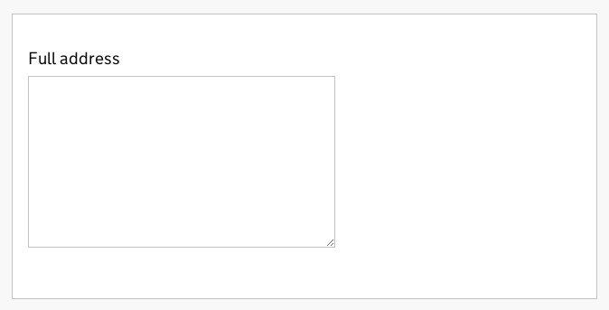
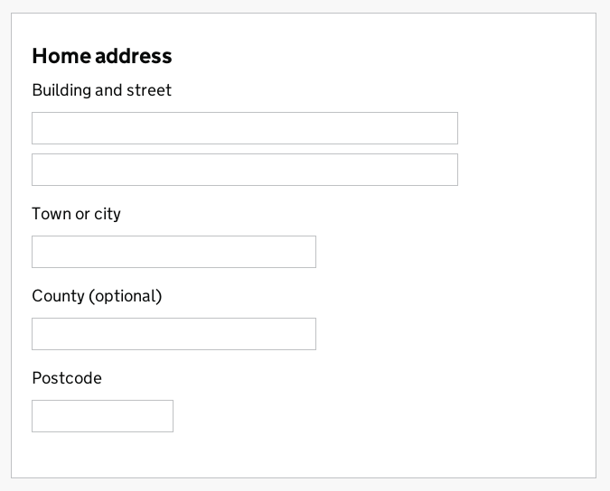
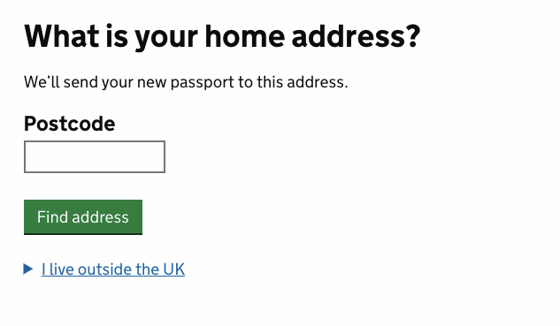

Beta This is new guidance. Complete our quick 5-question survey to help us improve it.
Design
Addresses
This guide explains how to ask users for an address.
Meeting the Digital Service Standard
To pass point 13 (make the user experience consistent with GOV.UK) in your service assessments, you must use GOV.UK design patterns and guidance.
Read the guide on using, adapting and creating design patterns before you start designing or building anything.
Before you start
The way you should ask for an address depends on what kind of address it is and what you need to do with it.
This guide describes 3 ways to ask for addresses and when to use them.
Using a free text box
Use a free text box if you expect a broad range of address formats and you don’t need to use specific sub-parts of the address (for example, street or postcode).
Here’s an example of a free text box:

Advantages of a free text box
A free text box:
- can handle any possible address format
- allows users to copy and paste addresses from their clipboard
- means users don’t have to work out which part of the address goes in which field
Disadvantages of a free text box
A free text box:
- makes it hard for you to separate an address into sub-parts, and impossible to do with 100% accuracy
- might not be compatible with legacy backend systems that use multi-field addresses
- can’t help users look up an address
Using multiple fields
Only use multiple address fields when you know which regions the addresses will come from and can find a format that supports them all. This can be difficult to know if you’re asking for addresses outside the UK.
Example of multiple fields
Here’s an example of a multiple address field pattern that works for simple UK addresses:

Advantages of multiple fields
Multiple fields mean:
- you can easily extract and use specific parts of an address (for example, street names or postcodes)
- you can give help for individual fields
- you can validate each part of the address separately
- users can complete the form using their browser’s auto-complete function
Disadvantages of multiple fields
Multiple fields have these disadvantages:
- it’s hard to find a single format that works for all addresses
- there’s no guarantee that users will use the fields the way you think they will
- users can’t easily paste addresses from their clipboard
If you use multiple fields
When using multiple fields, you should:
- avoid making individual fields mandatory (but warn users if they don’t fill in any fields)
- make the fields the appropriate length for the content - it helps people understand the form (for example, make postcode fields shorter than street fields)
- not make fields case sensitive (let people use upper or lower case)
- write ‘postcode’ as one word
- let people enter postcodes with or without spaces
Royal Mail doesn’t need a county as long as the town and postcode are included, but you should include a county field so that people who don’t know their postcode can give a valid address.
Using an address lookup
An address lookup (sometimes called a ‘postcode lookup’) lets users specify a UK address by entering their postcode (and optionally their street name or number) and selecting their address from a list.
The passport renewal service used this approach.

Advantages of address lookup
Using an address lookup means that:
- people entering UK addresses don’t have to enter as much information manually
- there’s less chance of mis-typed UK addresses
If you use an address lookup
When using an address lookup you should:
- make it clear that the address lookup only works for UK addresses
- provide a manual option for people with international addresses or addresses that are missing or badly formed in the Royal Mail database
Discuss addresses
Discuss asking users for an address on the design patterns wiki.
Related guides
You may also find these guides useful:
- Published by:
- Design community
- Last update:
-
Added an updated example of a postcode lookup. Also changed references to 'address finder' to 'address lookup'.
-
Guidance first published